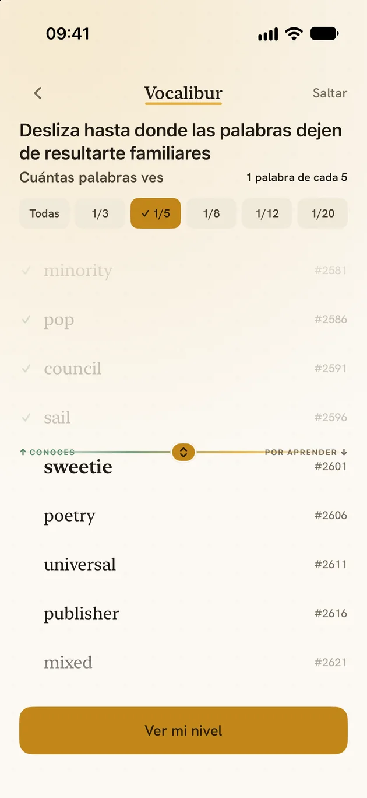

¿Qué palabras aprender?
Parte de lo que ya sabes.
Desplázate por la lista de palabras, de la más común a la más rara, y elige tu punto de partida. Después, Vocalibur introduce las palabras nuevas por frecuencia: 30.000 tarjetas, referencias por nivel y 55 temas.